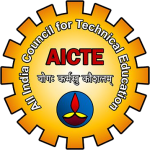
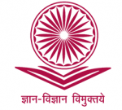
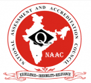
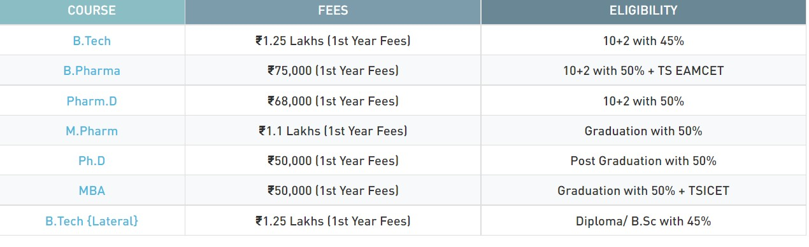

The Gandhian Institute of Technology and Management (GITAM) University, a private engineering institution, was founded in the Indian coastal city of Visakhapatnam in 1980. Initially known as GITAM College, it was affiliated to Andhra University, but gained independence and its own statutes in 2007. Rated A+ by India’s Ministry of Human Resource Development and the National Assessment and Accreditation Council, it is recognised as a research university by the Universities Grants Committee. it defines its mission as ‘To impart futuristic and comprehensive education of global standards including a high sense of discipline and social relevance in a serene and invigorating environment’. Students are admitted via GITAM’s own online entry test, the GAT, which is regarded as one of the most competitive tests in southern India. The main campus is a 170 acre site at Rushikonda in Visakhatapatnam, state capital of Andra Pradesh and a seaport dating back to the sixth century BC which in the last decade has been listed both as one of the 100 fastest growing cities in the world and the third cleanest in India. The Rushikonda campus accommodates the schools of Technology, Pharmacy, Science, Management, International Business, Architecture, Law, Medicine, Nursing and Gandhian Studies as well as the Centre for Distance Learning, rated in a 2017 survey as the best of its type in South India.
 Approved by AICTE, New Delhi. All B. Tech and B. Pharmacy Programs have been accredited by NBA. Civil Engineering program has been accredited by NBA in Tier-II, valid till 2021. Computer Science & Engineering, Electrical & Electronics Engineering and Electronics & Communication Engineering programs are re-accredited by NBA in Tier-II, valid till 2020. Chemical Engineering, Information Technology and Mechanical Engineering programs are re-accredited by NBA in Tier-I, valid upto 30.06.2022 Pharmacy program is accredited by NBA in Tier-II, valid till 2020.   Accredited with A Grade by NAAC (National Assessment and Accreditation Council).Pharmacy programs are approved by the Pharmacy Council of India (PCI). TCS Accreditation.
GITAM University, Hyderabad Fees & Eligibility 